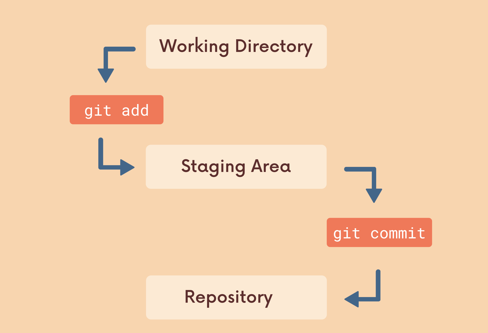

Git 101: Add, Commit & Branch (P1)
Git là gì?
Đầu tiên để hiểu về git, chúng ta cần hiểu khái niệm Version control system(VCS).
VCS là 1 chương trình theo dõi và quản lý sự thay đổi của file, giúp chúng ta có thể xem lại những đoạn code cũ, so sánh và thay đổi về 1 version trong quá khứ,… Có rất nhiều VCS, và trong số đó nổi tiếng nhất, phổ biến nhất là Git.
Repository
Trong Git, Repository là nơi lưu trữ, quản lý tất cả những thông tin cần thiết (thư mục, tập tin, ảnh, video, bảng biểu, dữ liệu… ) cũng như các sửa đổi và lịch sử của toàn bộ dự án (folder lưu trữ source code).
Để khởi tạo Repository cho 1 folder chứa source code, dùng lệnh:
git init
Lệnh này sẽ tạo ra một thư mục .git và đây chính là Repository, còn phần code nằm cùng với thư mục .git được gọi là Working Directory (WD).
Có hai loại repository:
- local repository - là repository nằm trên chính máy tính của chúng ta.
- remote repository - là repository nằm trên một máy chủ từ xa được cung cấp bởi các nhà phân phối như Github, Gitlab hay Bitbucket, …
Các lệnh cơ bản
1. git status
Trong WD, có 2 loại file:
- Tracked file – là file đã được đánh dấu theo dõi trong git trước đó. Và nó sẽ có thêm các trạng thái phụ khác là
unmodified(chưa chỉnh sửa gì),modified(đã chỉnh sửa) vàstagged(đã sẵn sàng để commit). - Untracked file - là file chưa được git theo dõi, thường là các file mới được tạo.
Để kiểm tra có các file nào đã được theo dõi và sửa đổi và những file nào mới được thêm vào, chúng ta có thể dùng lệnh git status .
[ ẢNH ]
2. git add & git commit - Cặp đôi song hành

Staging Area là khu vực sẽ lưu trữ những thay đổi của bạn trên tập tin để nó có thể được commit. Tập tin nào muốn được commit thì tập tin đó phải nằm trong Staging Area.
Một tập tin khi nằm trong Staging Area sẽ có trạng thái là staged.

Lệnh git add dùng để thêm file có sự thay đổi (modified) vào Staging Area:
// thêm tất cả các file modified và untracked
git add .
// hoặc chỉ định cụ thể từng file
git add navbar.html navbar.css navbar.js logo.jpg

Commit là một hành động để Git lưu lại một bản chụp (snapshot) các sự thay đổi trong thư mục làm việc, và các tập tin và thư mục được thay đổi đã phải nằm trong Staging Area. Mỗi lần commit nó sẽ được lưu lại lịch sử chỉnh sửa của mã nguồn kèm theo tên và địa chỉ email của người commit.
Lệnh git commit -m "<Nội dung commit>" dùng để tạo 1 commit. Trường hợp nội dung commit phức tạp, cần ghi rõ ràng thì gõ git commit, 1 trình soạn thảo dựa theo cài đặt sẽ được mở ra để nhập nội dung (có thể cài đặt editor bằng lệnh git config [--global] core.editor <Tên editor>).

Mỗi commit sẽ có 1 mã hash (mã này là duy nhất trong phạm vi project) dựa theo message. Đồng thời commit này cũng sẽ chứa đường dẫn đến commit trước đó (commit cha).

Để xem lịch sử commit, chúng ta dùng lệnh git log .
[ ẢNH ]
1 số quy tắc nên dùng khi commit:
- 1 git commit cần có tính atomic, tức là 1 commit chỉ thể hiện 1 hành động duy nhất.
- tiêu đề không nên quá 50 kí tự, nếu dài hơn thì cân nhắc chuyển xuống body. Mỗi dòng ở body không nên chứa quá 72 kí tự để đảm bảo dễ đọc.
Trường hợp commit message sai, hoặc muốn thêm file mới sửa, có thể dùng lệnh git commit --amend.
Cập nhật lại message nếu cần và lưu => Done.
[ ẢNH ]
Trong thực tế, có nhiều file, folder chúng ta không muốn git theo dõi. Để khai báo các file này, chúng ta có thể tạo 1 file .gitignore và điền tên các file, folder vào.
/*
* Nội dung 1 file gitignore
*/
file1.txt // không track file file1.txt
folder1/ // không theo dõi toàn bộ folder1
*.vue // không theo dõi toàn bộ file có đuôi là .vue
Branch (Nhánh)
Trong 1 team phát triển phần mềm, mỗi người có thể làm việc với 1 module, tính năng khác nhau, và việc code chung hết 1 chỗ có thể gây khó khăn trong làm việc, khi không biết đâu là file mình thay đổi, đâu là người khác thay đổi. 1 tính năng này xong nhưng chưa biết những người khác đã xong chưa, đẩy lên lỗi tùm lum. Để giải quyết việc này, chúng ta có thể sử dụng Branch (nhánh) trong git. Branch giúp chúng ta tạo 1 luồng làm việc mới từ luồng hiện tại, chúng ta có thể sửa đổi trên nhánh đó, và không gây ảnh hưởng gì đến nhánh hiện tại.
Để xem danh sách các nhánh trong dự án ở máy, chúng ta dùng lệnh git branch.Nhánh master thường sẽ là nhánh mặc định khi chạy lệnh git init. Dấu * thể hiện nhánh hiện tại.
Để tạo 1 nhánh mới chúng ta dùng lệnh git branch <branch_name>. Lệnh này sẽ tạo 1 nhánh mới tên là branch_name là bản sao của nhánh hiện tại.
Gõ git branch lần nữa, chúng ta vẫn thấy đang ở nhánh master. Để chuyển sang nhánh khác, chúng ta dùng lệnh:
git switch <branch name>
git switch là lệnh mới được đưa vào thời gian gần đây, để dùng thay thế cho lệnh git checkout, do git checkout có thể thực hiện quá nhiều công việc.Ngắn gọn hơn để tạo nhánh mới đồng thời chuyển luôn sang nhánh đó, có thể dùng:
git switch -c <branch name>
// hoặc
git checkout -b <branch name>
Tương tự như Repository, có hai loại branch:
- local branch - là branch nằm trên máy tính của chúng ta
- remote branch - là branch nằm trên máy chủ (nằm ở remote repository)
Để xóa 1 branch, phải đảm bảo đó ko phải branch hiện tại và gõ lệnh sau:
// xóa có kiểm tra đã merge với branch hiện tại chưa, nếu chưa sẽ thông báo
git branch -d <branch>
// hoặc khi muốn xóa ko cần kiểm tra
git branch -D <branch>
Để đổi tên 1 branch:
git branch -m <branch> <new-name>
Tham khảo: